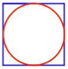
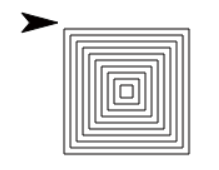

Page 5: Using Pinwheel to Make Polygon
Lab 7, Page 5
On this page, you will use your existing pinwheel block to make asterisk and polygon blocks.

You can use your general-purpose pinwheel procedure to create other, simpler special-purpose procedures that each do a particular job.
- If it isn’t open already, open your U1L3-Pinwheel project from the previous page.
-
Use your
pinwheelblock to create a more specializedasteriskblock.-
First, make a new block called
asteriskwith two inputs: one for the number of branches and one for the length of each branch. You may wish to review how to make a new block at Lab 2 Page 6: Making Your Own Block. -
Now fill in the three inputs to
pinwheelso that it correctly draws an asterisk.
-
First, make a new block called
-
Similarly, write a
polygonblock that usespinwheelwith appropriate inputs to draw a polygon with a given number of sides and side length.
Debugging with
You can use pause all to place breaks in your code so you can see what’s happening along the way. When you run code with pause all in it, you can click the yellow Run/Pause button next to the Green Flag ( /
/ ) to move through the code up until a
) to move through the code up until a pause all block is reached again. The pause all block will pause every script that is running until the yellow Run/Pause button is clicked.
On page Lab 2 Page 4: Making Programs Talk, you learned about procedural abstraction: giving a code segment a name (making it a block). That way you can call it more than once instead of copying and pasting.
Here is another kind of abstraction: noticing that asterisk and polygon are both kinds of pinwheels, and writing one, more general, pinwheel block that uses an input so that the block can be used to make asterisks, polygons, or other interesting designs.
AAP-3.B.5
This is an example of abstraction by generalization: looking at chunks of code that are almost the same and writing a single block by using an input to distinguish among the different cases.
-
If you look inside of
pinwheeland see how you’re using it inpolygon, you’ll see that there are steps that you don’t really need for the case of a polygon. Write another version ofpolygonbuilt directly out of primitive blocks (move,turnand so on). How simple can you make it?
AAP-3.B.7
As long as your polygon block draws the right picture, it doesn’t matter to the rest of the project what’s inside it.
-
Use your
pinwheelblock code one last time to create acircleblock that accepts one input for the size. -
Use the
randomblock together withset pen colorandset pen sizeto draw a variety of shapes.

-
Challenge: Create a script that draws a blue square of size 100 and then draws a red circle that fits perfectly inside it.

.png "Albers-style nested squares")
.png "Albers-style nested squares")
.png "Albers-style nested squares")
This Take it Further refers to what you did in Lab 6: Squiral. Take a look back at what you did for that lab and work with that code that you made for that lab to complete this.
-
Find a way to use
forto nest squares this way. Build your block with two inputs that let you specify how many squares the design will contain and how much bigger each square will be than the previous one.


On the right is a painting by Josef Albers. He was interested in experimenting with variations of color within a “family” of similar colors. Snap! will let you make similar experiments.
- What is the favorite color of the author of this activity?
- If you didn’t do the Take It Further activity based on this Kazimir Malevich picture then read it now to learn about Snap! features for solid rectangles and color families.
- If you haven’t already, do If There Is Time #10, which shows a simple version of this project idea.
-
Okay, now dig in.
Randomness: The four examples above are different from the actual Albers picture in that they include occasional colors that aren’t from the same family. This can make the pictures more interesting to someone who doesn’t share Albers’s interest in subtle differences in color. (Albers himself, in fact, had more color variation in other pictures of this type.) Too much randomness, though, can make the picture less interesting. Compare the last two examples above; the left one of those two is clearly based on the orange family, with rainbow-neighbors red and yellow, but the right one has violets, greens, oranges, a yellow—too much chaos, maybe. Look back at the Gossip project if you don’t remember how to choose something special once out of six times, or once out of 14 times. Other random choices you can make are the number of squares, how much to shrink the size from one square to the next, and how much to move the corner of the next square horizontally and vertically (the picture is more interesting if those two numbers are different, so the smallest square isn’t exactly in the center).
-
 This block is like the squiral, but instead of changing the input to
This block is like the squiral, but instead of changing the input to move, it changes the input toturn:
- Try sketching what it will draw with an angle of 2.
-
Then build it, and try each of these tests:
You can stop each test with the stop button
 when you’re sure nothing new will happen, but don’t decide that too quickly!
when you’re sure nothing new will happen, but don’t decide that too quickly! -
What’s going on? Can you work out a theory to predict anything about the shape it draws for a particular angle input? (Don’t click unless you need a big hint.)
Hint: Think about divisibility.
AAP-3.B.4